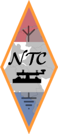

NTC:
Netherlands Telegraphy Club
The goal is to promote, foster and preserve Morse Code.
It is an open club with emphasis on Dutch speaking radio
amateurs.
Club email is NetTelClub at outlook dot com.
Meeting frequencies are 3568 kHz and 7068 kHz. The 40 meter frequency is chosen to help out the novice class licensees in the Netherlands who may only transmit between 7050 and 7100.
Back to ECM listing
Back to EuCW Start Page